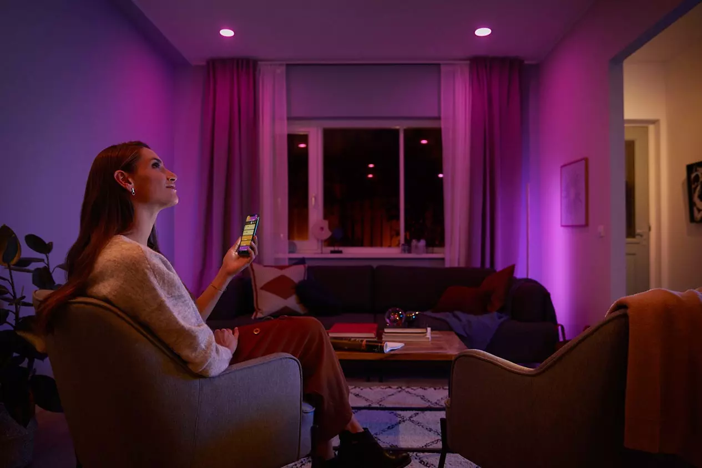

Philips Hue คืออะไร?
- Philips Hue คือหนึ่งในอุปกรณ์ IoT (Internet of Things) หรืออุปกรณ์ที่รองรับการควบคุมการทำงานผ่านอินเตอร์เน็ตได้ โดย Philips Hue เป็นอุปกรณ์ IoT ประเภทหลอดไฟ หรือที่เราเรียกกันว่า "หลอดไฟอัจฉริยะ" สามารถควบคุมการทำงานได้ง่ายๆผ่านแอปบน Smartphone โดยการใช้งานจะต้องมี Philips Hue Bridge เป็นตัวกลางในการเชื่อมต่อและส่งสัญญาณ (ยกเว้นรุ่นที่ใช้งานแบบ Bluetooth ได้ด้วย) โดยสัญญาณที่ส่งหากันระหว่างอุปกรณ์ Philips Hue จะไม่ใช่ WIFI แต่เป็นสัญญาณ Zigbee ซึ่งเป็นสัญญาณที่มีความแม่นยำสูง และดีตรงที่ไม่รบกวนสัญญาณ Wifi ทำให้ Philips Hue เป็นหลอดไฟอัจฉริยะที่เชื่อมต่อได้เสถียร และใช้งานได้ลื่นไหลกว่าแบรนด์ทั่วไปในท้องตลาด และฟังก์ชั่นการทำงานไม่ได้มีเพียงแค่การส่องสว่างเท่านั้น แต่ยังสามารถปรับแต่งสีสันได้หลายล้านสี สั่งการทำงานอัตโนมัติก็ได้ และหากใช้ร่วมกับอุปกรณ์เสริมอื่นๆจาก Philips Hue อีก เช่น รีโมท เซ็นเซอร์ ก็จะช่วยเพิ่มความสามารถในการทำงานเพิ่มขึ้นด้วยครับ
- Philips Hue เหมาะกับคนที่อยู่บ้านเดี่ยวหรือที่พักอาศัยที่มีเร้าท์เตอร์ส่วนตัวแยก เพราะ Philips Hue Bridge ที่เป็นตัวกลางในการควบคุมต้องเชื่อมต่อเข้ากับเร้าท์เตอร์ผ่านสาย lan เท่านั้นครับ จะไม่สามารถเชื่อมต่อผ่านสัญญาณ Wifi ได้ครับ
